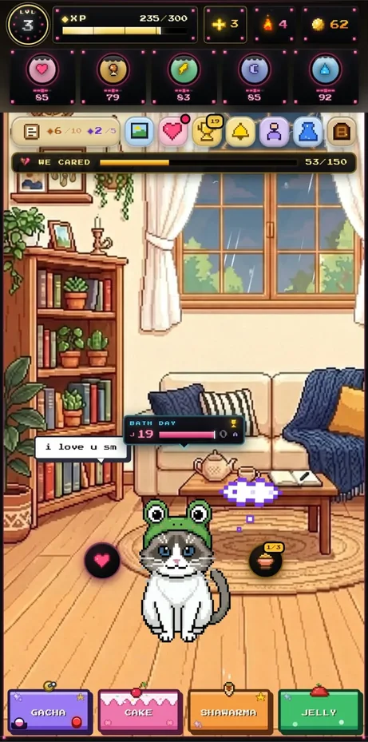
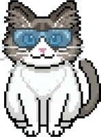
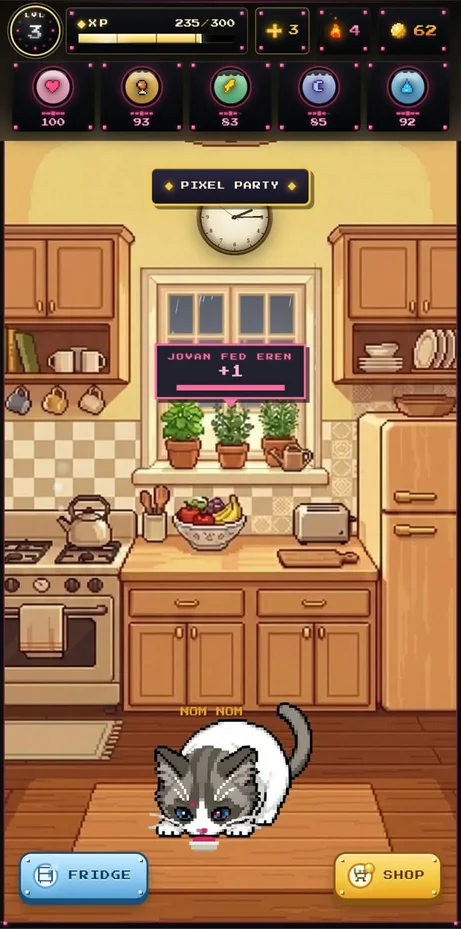
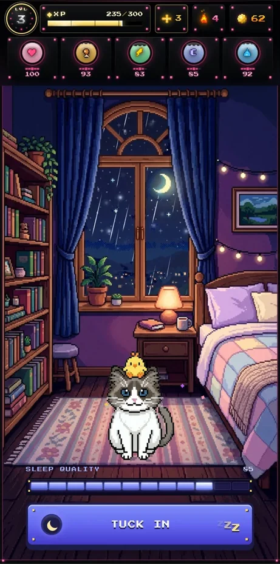
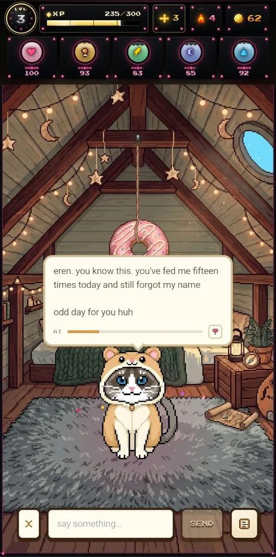
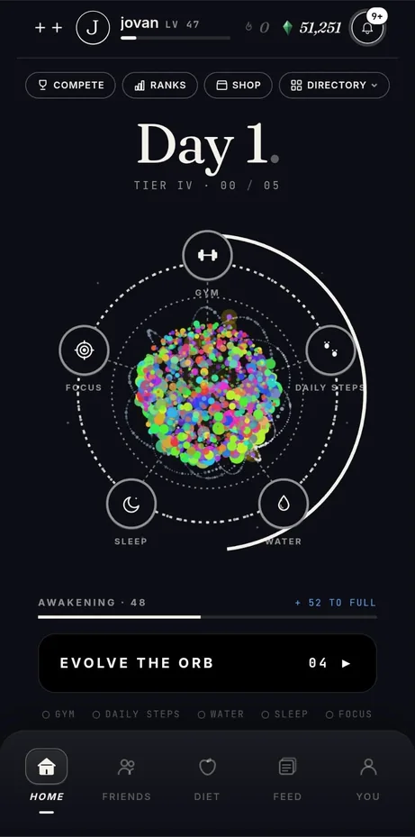
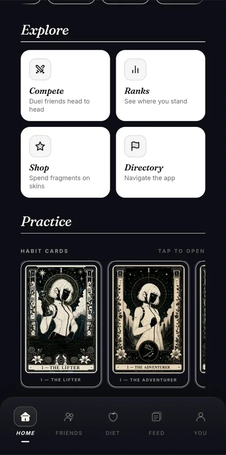
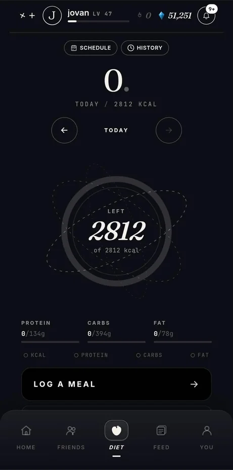
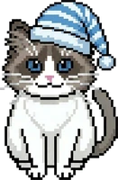

Belgrade · Final-year IT · Available 2026
JOVANŠPINJO
Junior AI engineer, data & BI. I build the parts around the model — the schema it reads, the auth and row-level security that fence it in, and the prompt and cache design that decides what it costs to run. The dictation pipeline below is one I wrote myself.

The terms
WHO TYPED IT
Eren and Outrank were built by directing coding agents: I wrote the specs, chose the schema, reviewed what came back and debugged it in production. I don't write React by hand and I won't pretend to in an interview.
What I designed, debugged and can defend is on the top rail. The next section is one I typed myself — and it runs in your browser.
Written by hand · running here

MURMUR
Hold a key, talk, and the text is in the editor before you've finished thinking the next sentence.
A push-to-talk dictation app for Windows. Python 3.12, PySide6 on Qt6. faster-whisper small.en runs locally on the GPU; when local inference comes back empty it falls through to Groq's whisper-large-v3-turbo.
Before the model sees anything the audio is cleaned: 200 ms off the head and 100 ms off the tail to kill the transient of the hotkey itself, a 4th-order Butterworth high-pass at 100 Hz, then peak normalisation to 0.8. There is a silence guard, because a model handed near-silence will confidently invent a sentence.
7,315 lines, written by hand, line by line.
os.add_dll_directory(…) — the nvidia-cu12 wheels put cuBLAS and cuDNN outside the directories Windows searches, so the loader is corrected at process start.
Mic in
16 kHz monoGate
push-to-talk−42 dBFS · 120 ms hold
HPF
Butterworth 4th100 Hz · Q 0.707
Normalise
peak → 0.8whisper
small.en · localCUDA
Groq
large-v3-turbofallback only
Text out
to the caretLive — the first four stages are running on your microphone right now. The chain stops there on purpose: whisper and the text output are not in this page, so no transcript appears here. That half runs on my machine.
Spectrogram · melpeak −∞ dB
Magnitude response×1.0
No text appears — this is the front half of the chain, and the model itself runs on my machine, not in this page. What you get is the real filter, on your own voice. No audio leaves this page and no network call is made. Until you press, the trace is a synthetic demo signal, not a recording.
Directed · owned · live
EREN
A cat-care app two people have used every day since April. Next.js and Supabase, with a chat companion that answers in its own voice.
Stat decay is client-side — every action resets the clock, so active care isn't punished.
Two-user household; every stat is realtime-synced across both phones.

1 2Push cooldown is DB-backed, two hours per tag. Without it a stat sitting on a boundary re-fires forever.
That toast crossed devices: one realtime channel per household, and it needs a unique suffix per mount or it silently fails to subscribe.

1 2The hosting tier has no hourly cron — the decay sweep runs from Postgres and the client pings on focus.
That sweep pages by keyset on id, not OFFSET — it mutates the very column an offset would have ordered on.

1 2LLM chat with a tool-calling memory — per user, capped at 60 items.
The cached prefix rotates per sitting, not per message. Per-message caching is how you burn money.
Drag, scroll, or use ← → · four rooms
“you've fed me fifteen times today and still forgot my name. odd day for you huh.”
Eren · attic · unedited reply · this is the app talking to its own author.
Professional · Belgrade
COMTRADE
Eighty hours modelling somebody else's sales data until it answered questions.
Comtrade System Integration, Belgrade. May–June 2026. I modelled a data warehouse over sales data in MS SQL Server, built the SSIS packages that load it, and wrote the Power BI reports that read it.
The expensive part isn't the load, it's the history. A slowly-changing dimension means every customer row you "update" is really a close-out and an insert — get it wrong and last year's revenue silently moves to this year's region.
-- close the old version, open the new one, in one pass
MERGE dim_customer AS t
USING stg_customer AS s ON t.customer_id = s.customer_id AND t.is_current = 1
WHEN MATCHED AND (t.city <> s.city OR t.segment <> s.segment) THEN
UPDATE SET t.valid_to = DATEADD(day, -1, s.load_date), t.is_current = 0
WHEN NOT MATCHED BY TARGET THEN
INSERT (customer_id, city, segment, valid_from, valid_to, is_current)
VALUES (s.customer_id, s.city, s.segment, s.load_date, '9999-12-31', 1)
OUTPUT $action, inserted.customer_key INTO #scd_audit;Directed · owned
OUTRANK
A habit tracker whose voice assistant is allowed to cost exactly sixty, two hundred and forty, or six hundred seconds a day.

1 2The budget model is mine. Each tier gets a daily allowance in seconds — 60, 240, 600 — checked before a realtime session is minted, so an exhausted account is refused with a 429 instead of running up a bill.
The quota increment happens inside a Firestore transaction. Two tabs opening a session at the same moment is not hypothetical.

1Tarot habit-cards. The art is the least of it — the economy and the unlock rules are schema, not decoration.
Two of them, lifted off the screen — hover or tap to turn:

1Macro targets derive from one stored profile. No duplicated client state — the number on this screen and the number in the assistant's context come from the same row.
Next.js 16 · React 19 · Firebase. That is a fact about the repository, not a claim about me.
Drag, scroll, or use ← → · three screens
Coursework
THE SLOW WAY
| What | Stack | What it proved | Hand |
|---|---|---|---|
| Ručna Radinost | C# · .NET 8 MVC · EF Core 9 | Multi-vendor marketplace, three roles on Identity | ✓ |
| Apoteka „Vita“ | Java EE · Servlet / JSP · MySQL | MVC Model 2 with no framework doing it for you | ✓ |
| Srećna šapa | PHP 8 · PDO · MySQL | Veterinary clinic, three roles, prepared statements throughout | ✓ |
| Video-game IS | ER / PMOV · T-SQL | 19 entities, 3 views, 3 table-valued functions, 3 procedures | ✓ |
Outputs

GET IN TOUCH
Built by hand for this page — no framework, no build step, no runtime dependency.
The spec, the measurements, the annotations and the argument are mine.
The typing was directed — same as Eren and Outrank. That's the point.